After completing this lesson, you’ll be able to:
The Public Safety department at your city has purchased FME and started using it.
However, having not (yet) taken the FME Form training course, they are not confident users and would like some assistance.
You have been tasked with conducting a "code review" on one of their workspaces. One of the main tasks is creating user parameters to replace hard-coded values.
1) Start Workbench
Start Workbench (2023.2 or later) and open the workspace C:\FMEData\Workspaces\AdvancedDataTransformation\exercise-code-review-a-colleagues-workspace-begin.fmw.
This is the workspace created by your colleagues:
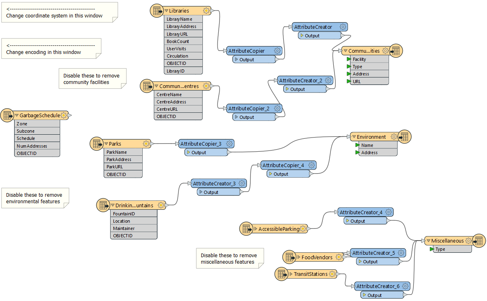
Notice that it converts from an Esri Geodatabase to Esri Shapefile format. Currently, the user must disable feature types to choose which ones to process. Similarly, they must set the destination coordinate system and data encoding using Navigator parameters. This is all very user-intensive.
Also, notice that the only annotations in the workspace are there to help the end user make such edits. There should be no need for that; published parameters should prompt the user instead, and that is what we will implement here.
2) Clean Up Auto-Created User Parameters
Open the User Parameters section of the Navigator window. Notice how there are already user parameters for the source and destination datasets:
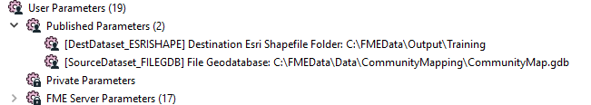
Your public safety colleague tells you that the source data will never change, so that parameter is of no use. So delete the user parameter labeled “SourceDataset_FILEGDB.”
However, she tells you that the destination location can be set by the user, so keep the parameter for DestDataset_ESRISHAPE.
3) Create Encoding Parameter
The Public Safety team want to make it easier to set the encoding of the output dataset. Currently, users are pointed by a workspace annotation towards where that writer parameter exists in the Navigator window!
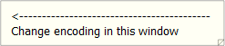
This shows you how difficult it is for them to locate the correct parameter in the Navigator window. Let's solve that with a user parameter.
Locate the Shapefile (ESRISHAPE) writer in the Navigator window and expand the list of FME parameters. Identify the Character Encoding parameter, right-click on it and choose Create User Parameter:
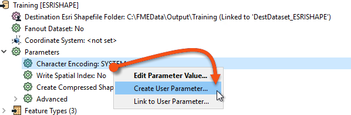
Simply click OK on the dialog that opens and a user parameter is created and linked to the FME one. Now there is a user parameter to make it easy to set that FME parameter.
4) Create Coordinate System Parameter
Another requirement, you are told, is an ability to set the output coordinate system. Again, this is currently done by using an annotation to point the user towards the Navigator Window.
However, if you simply publish the writer’s coordinate system parameter – try it and see – then there will be a problem. The parameter will allow the end-user to select any coordinate system supported by FME.
This is not necessarily very useful. Since the data is located in Vancouver, BC, it makes little sense for the user to be able to reproject it to (for example) NZMG (a New Zealand coordinate system).
It would be preferable if the parameter only allowed the end-user to select a coordinate system from a smaller list.
So, create a new user parameter (Right-click User Parameters > Manage User Parameters, then click the green plus button) of type Choice. Set the Parameter Identifier to be CoordSysParam, and set the prompt to be "Select Output Coordinate System:". Additionally, enabled Published and disable Required:
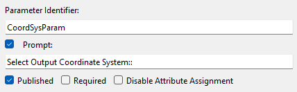
Next, we'll fill in the Choice Configuration section. First, ensure it is set to Dropdown. Normally we would next enter values manually into the Value and Display columsn, but for coordinate systems (and reader/writer formats) we have the option to have FME define them for us.
Click on the button labeled Import and choose Coordinate System(s):
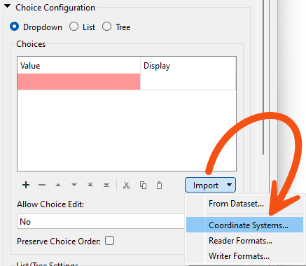
This opens a list of coordinate systems that we can import as values in our user parameter.
Locate and put a checkmark in the box for the following coordinate systems:
Then click OK to close this dialog. You will be returned to the configuration dialog and find that Value and Display columns have been automatically filled for these coordinate systems:
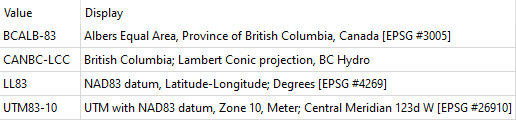
The left-hand side shows what the value FME will receive, and the right-hand side what the user is prompted to select.
Click OK to close the dialog.
5) Link Coordinate System Parameter
Now we have the user's selection, but we still have to apply it to the FME parameter. Locate the writer’s coordinate system parameter, right-click on it, and choose Link to User Parameter:
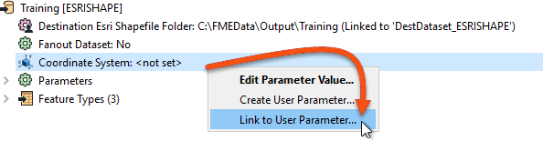
When prompted, select the newly created CoordSysParam and click OK to accept the selection. Now when the workspace is run the user is prompted to select a coordinate system, and that system's short name value is passed to FME.
6) Create Tables Parameter
The final task for us here is to create a way to decide which tables are going to be read. If you remember, at the moment the way your colleagues do this is by disabling various reader feature types. However, there is a better method.
This is an interesting task because we want to control the source tables (Libraries, Parks, etc.), but based on the selection of destination tables (CommunityFacilities, Environment, and Miscellaneous).
For example, we want the user to select output feature types like "Environment", which needs both "Parks" and "DrinkingFountains" reader feature types.
However, this we can do very easily. Firstly locate the Feature Types to Read parameter in the CommunityMap reader "Features to Read" parameters (in the Navigator window):
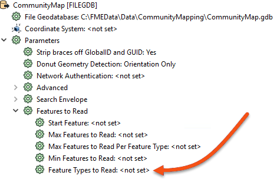
Right-click on it and choose Create User Parameter. A dialog will open that is already populated with a list of feature types:
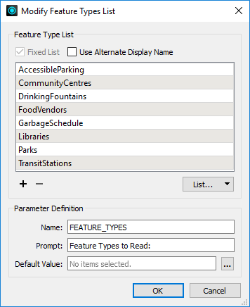
Check the box that is labeled Use Alternate Display Name. This provides the ability to give alternative names for each feature type. What we need to do is use this dialog to group common reader feature types together under a single display name.
Delete the entry for GarbageSchedule, as this data isn’t connected and is not needed.
Then, match the contents of the workspace by editing the Display Names. They should match as follows (the order is not important):
| Display Name | Feature Type |
|---|---|
| Community Facilities | Libraries |
| Community Facilities | CommunityCentres |
| Environment | Parks |
| Environment | DrinkingFountains |
| Miscellaneous | FoodVendors |
| Miscellaneous | TransitStations |
| Miscellaneous | AccessibleParking |
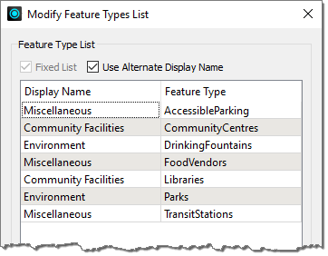
Underneath that change the prompt to read “Tables to Write” and then click OK to close the dialog.
What we have done here is set up a list of output layers to select from, with a list of input layers that each refers to.
7) Save and Run Workspace
Save the workspace. Then run the workspace, ensuring Prompt for Parameters is enabled.
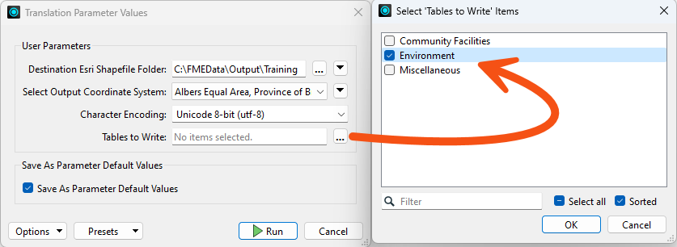
Pick Unicode 8-bit (utf-8) as the encoding. Select a coordinate system, noting how the user is restricted to those chosen by us. Select one or two of the groups of tables to write and click OK to run the workspace.
The translation will be carried out. Inspect the data to ensure the results are correct. The Community Facilities option – for example – should be made up of both libraries and community centers.
Challenge
Another part of this code review would certainly consist of cleaning up the workspace style. If you want a challenge, tidy up the workspace by giving it a more logical structure and adding bookmarks and annotations.